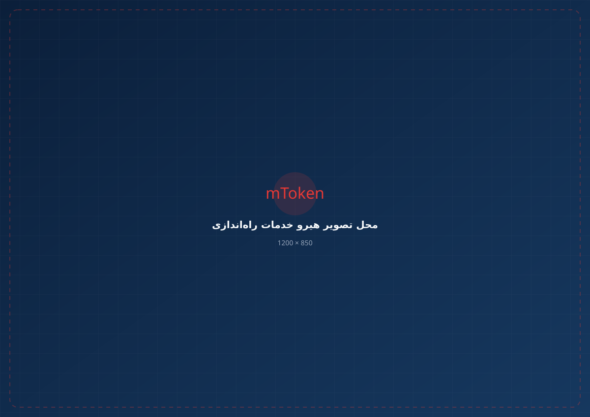
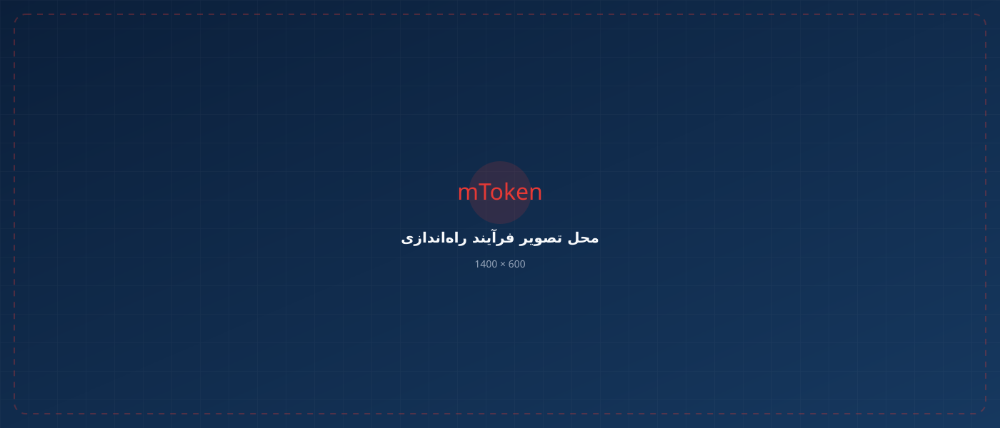

برای استفاده از گواهی دیجیتال در سامانههای مختلف، بسته به نوع سامانه ممکن است به توکن، Java، دستینه، Middleware، نرمافزارهای جانبی یا تنظیمات خاص نیاز باشد. شما فقط سامانهای را که میخواهید با آن کار کنید معرفی کنید؛ ما مسیر فنی موردنیاز برای راهاندازی را مشخص و آماده میکنیم.

استفاده از گواهی دیجیتال در همه سامانهها به یک روش انجام نمیشود. ما ابتدا سامانه را مشخص میکنیم و سپس ابزار و تنظیمات مناسب همان سامانه را آماده میکنیم.

در سامانههایی که برای استفاده از گواهی به سرویس یا نرمافزار دستینه نیاز دارند، نصب، راهاندازی و تنظیمات موردنیاز انجام میشود.
برخی سامانهها برای اجرای بخش امضای دیجیتال یا دسترسی به گواهی از Java استفاده میکنند. نسخه مناسب Java و تنظیمات موردنیاز بررسی و آماده میشود.
در بعضی سامانهها ممکن است Middleware، نرمافزار اختصاصی، تنظیمات مرورگر یا روش فنی دیگری موردنیاز باشد.
نام سامانه را به ما بگویید؛ کارشناسان بر اساس همان سامانه، مسیر مناسب استفاده از گواهی دیجیتال را بررسی میکنند.
آمادهسازی محیط موردنیاز برای استفاده از گواهی دیجیتال در فرآیندهای مرتبط با سامانه مودیان و تنظیمات لازم برای امضای الکترونیکی.
امور مالیاتیآمادهسازی توکن و محیط نرمافزاری موردنیاز برای استفاده از گواهی دیجیتال در فرآیندهای سامانه جامع تجارت.
تجارت و ثبت سفارشآمادهسازی محیط اجرای موردنیاز سامانه، از جمله بررسی نسخه و تنظیمات Java در مواردی که اجرای سامانه به Java وابسته است.
Javaآمادهسازی محیط استفاده از گواهی دیجیتال و بررسی نرمافزارها و تنظیمات لازم متناسب با فرآیند سامانه کاتب.
خدمات ثبتیتنظیم و آمادهسازی محیط لازم برای استفاده از گواهی دیجیتال در خدمات الکترونیکی و فرآیندهای مرتبط با سامانه ثبت من.
خدمات ثبتیبررسی محیط نرمافزاری و آمادهسازی توکن و گواهی دیجیتال برای استفاده در سامانههای مرتبط با خدمات حملونقل جادهای.
حملونقلآمادهسازی محیط لازم برای استفاده از گواهی دیجیتال؛ در مسیرهای مبتنی بر Java، نسخه و تنظیمات Java و اجرای صحیح محیط بررسی میشود.
Javaسامانه موردنظر شما در لیست نیست؟ نام سامانه و نوع توکن خود را اعلام کنید تا مسیر مناسب راهاندازی بررسی شود.
بررسی تخصصیلازم نیست خودتان تشخیص دهید مشکل از Java است، دستینه است، Middleware است یا تنظیمات نرمافزار. کافی است سامانهای را که میخواهید با آن کار کنید و توکن گواهی دیجیتال خود را معرفی کنید.
دستینه، Java و Middleware جایگزین یکدیگر نیستند. هر سامانه ممکن است از یکی از این روشها یا ترکیبی از ابزارها استفاده کند.
در سامانههایی که دستینه برای دسترسی یا استفاده از گواهی موردنیاز است، سرویس و تنظیمات مربوط به آن آماده میشود.
در سامانههای مبتنی بر Java، نسخه مناسب و تنظیمات اجرای برنامه بررسی میشود تا محیط موردنیاز سامانه آماده باشد.
بسته به نوع توکن و سامانه، ممکن است Middleware مناسب برای دسترسی نرمافزار به گواهی نیاز باشد.
تنظیمات مرورگر، نرمافزار، دسترسیها و سایر اجزای موردنیاز سامانه نیز در فرآیند راهاندازی بررسی میشوند.
قرار نیست خودتان از روی خطاها حدس بزنید چه نرمافزاری لازم است.
فقط نام سامانهای که میخواهید با آن کار کنید را بگویید.
نوع توکن و روش دسترسی به گواهی بررسی میشود.
Java، دستینه، Middleware یا تنظیمات لازم آماده میشود.
محیط برای استفاده از گواهی دیجیتال در سامانه آماده میشود.
لازم نیست دنبال راهحل فنی بگردید و چند نرمافزار مختلف را امتحان کنید. میتوانید راهاندازی محیط استفاده از گواهی دیجیتال را به کارشناس بسپارید.
هدف این خدمت این است که مسیر فنی را متناسب با سامانه شما مشخص کنیم و محیط موردنیاز را برای استفاده آماده کنیم.
لازم نیست بدانید سامانه شما به دستینه، Java، Middleware یا ابزار دیگری نیاز دارد؛ این موضوع بر اساس سامانه بررسی میشود.
نصب نرمافزارها و تنظیمات لازم متناسب با محیط و روش استفاده از گواهی انجام میشود.
به جای اینکه بین آموزشها و راهکارهای مختلف جستجو کنید، موضوع را با کارشناس مطرح میکنید و مسیر مناسب را دریافت میکنید.
کلید خصوصی گواهی دیجیتال اطلاعات حساسی است و باید نزد دارنده گواهی باقی بماند. در فرآیند راهاندازی، هدف آمادهسازی محیط و ابزارهای لازم برای استفاده از گواهی است و نباید اطلاعات محرمانه گواهی بدون ضرورت در اختیار دیگران قرار گیرد.
لازم نیست نام نرمافزار، نسخه Java یا روش دسترسی به گواهی را بدانید. سامانه را معرفی کنید تا مسیر مناسب راهاندازی را با شما بررسی کنیم.